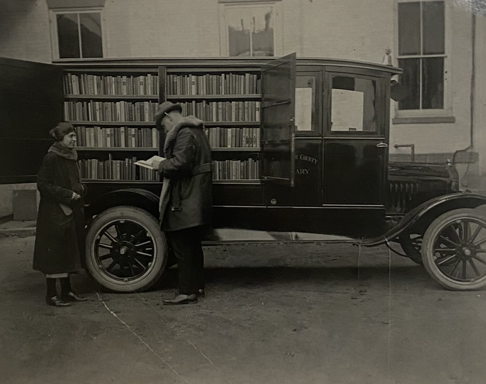
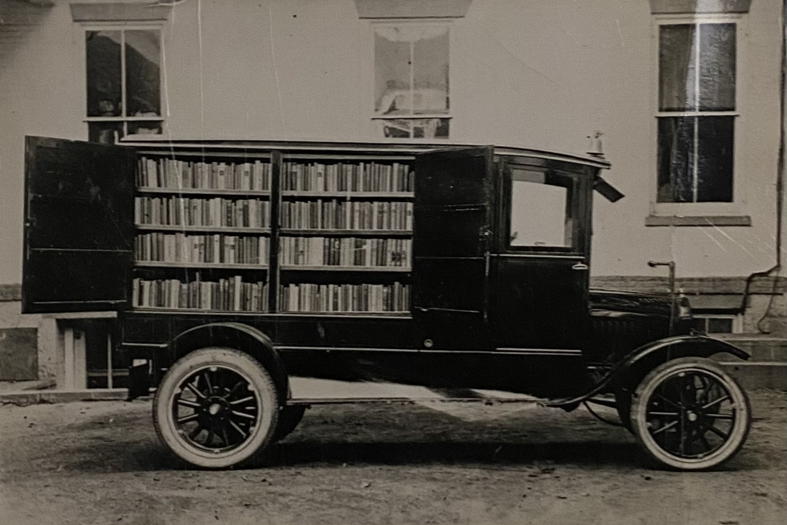
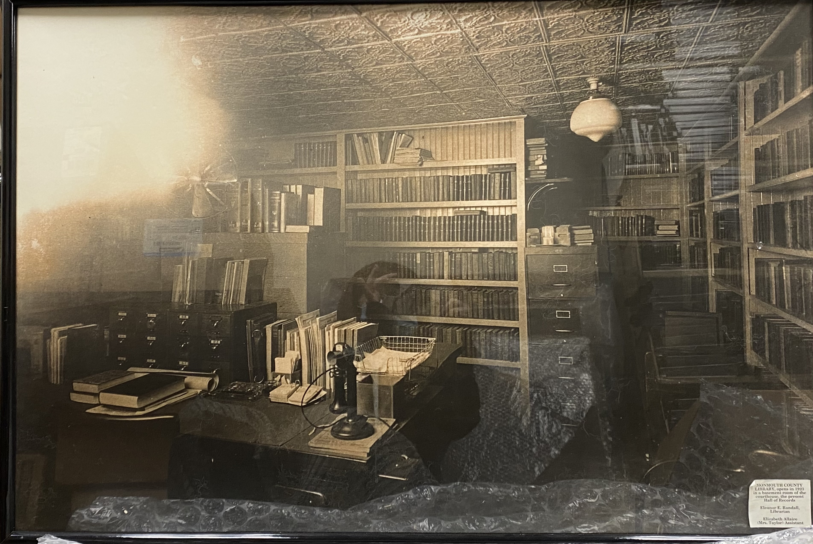
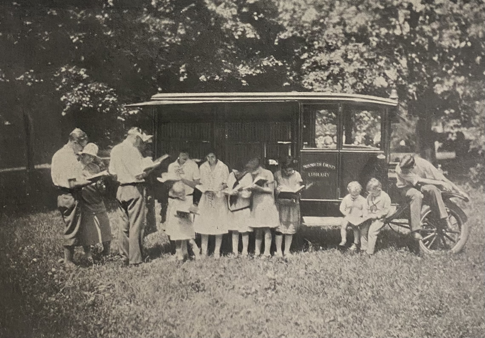
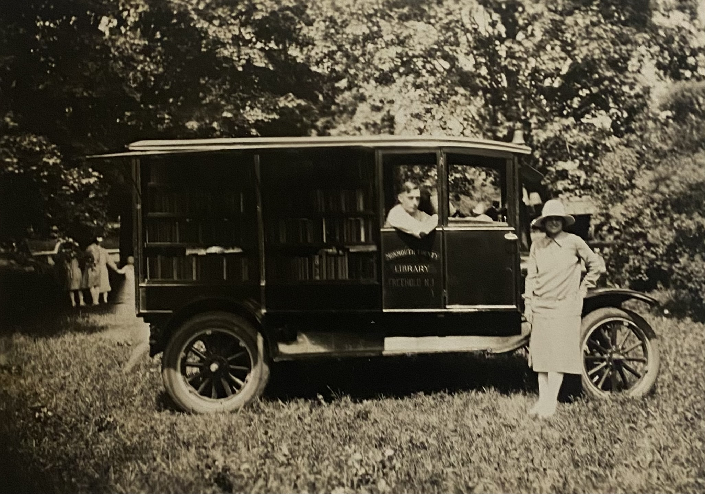
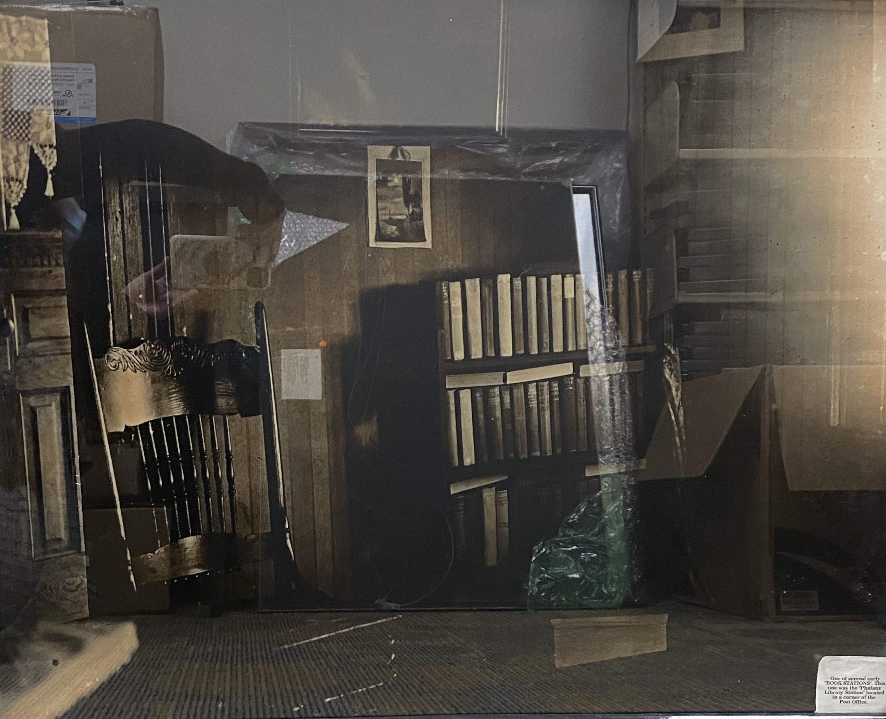

Monmouth County Library is established by the County Board of Freeholders, after a majority of residents vote in favor of starting a county library system. The County Board of Agriculture, the Grange, and the County Agent all strongly support opening a library as well.
The Monmouth County Library Commission appoints Elinor E. Randall as the first County Librarian. Randall’s job begins on May 1st.
The library is expected to be fully functioning on September 1st.
Station libraries are being established by the County Library Commission.
The goal for the station libraries is to make books more easily available to county residents than a city library system could. They are a mix of public and private locations that will house circulating collections for registered borrowers to use.
The first stations are established at Holmdel, Rumson, and at the Woman’s Club in Ocean Grove.
Every other month, the stations will be visited by the Monmouth County Library's book automobile to will receive a changing variety books to circulate among the patrons.
The library's automobile can hold 800 books, phonograph records, and pictures. It was made from a refurbished truck and weighs more than one ton.
Outside of library stations, residents will also be able to borrow items by mailing item requests to the Librarian’s Office at the Courthouse in Freehold.
Bertram Borden, who is Chairman of the Housing Committee for the Monmouth County Library, requests that the county review options for making additional space for the library's main headquarters.
After more than 1 year in service, Bertram says that the library has, “completely outgrown its quarters in the basement of the courthouse.”
There are now 23,875 books in Monmouth County Library's collection, and they are available to patrons through 40 library stations.
A professional relationship with local schools has also started: Monmouth County Library now delivers items requested by teachers and students directly to schools. This allows teachers and students to order reference materials to supplment their lessons, or simply order items to enjoy on their free time.
A survey wassent to every school in the county, which lead to responses from 41 schools. The library then visited 26 schools, out of which 11 were then selected to help house circulating children’s collections.
It is reported that the library’s book automobile has delivered 35,183 books through 515 deliveries to the library stations.
In one month alone, 2,000 books were distributed through the stations.
The headquarters for Monmouth County Library has expanded into a remodeled boiler room behind the Courthouse in Freehold. There are now 36,557 books in the collection - which is a 53% increase over 14 months. 3,738 of the books were delivered to fulfill patron book requests.
Books can be borrowed for as long as patrons need to finish them. The time could be extended if the books were used for studies, or if someone lived far from a library station.
There are 11,170 registered patrons, many of which report that they borrow items for their family members and neighbors as well as for themselves. County librarians also say that metal workers, plumbers, carpenters, and other manual laborers often ask for materials that help with learning more skills and techniques for their trades.
At this time, the library is supported by a tax of 0.2 mill, which comes from the towns who voted to join into the county library system. The tax provides $20,770 to the library for work functions, and another $1,280 is provided by the state to help the library's book automobile to deliver requested materials to 50 schools.
116 stations now exist, and the book automobile visits each one every 2 months. The largest stations are located in Allentown, Atlantic Highlands, Brielle, Farmingdale, Keansburg, Ocean Grove, and Red Bank.
The library states that its goal for 1927 will be to increase demand for the library stations.
Monmouth County Library continues to grow quickly.
The headquarters location in Freehold is reporting that its space is becoming too crowded again.
The books have made 41,268 circulations in the past year – which was an increase of 10,000 more book circulations compared to the year prior.
To keep up with the increased demand, the number of library staff has grown. However, some locations - such as the Keansburg location - are still reporting that can no longer rely on volunteer help to stay open for their set schedules, and must now implement paid staffing.
It is also reported that the books housed at each location are tailored to fit each community’s individual preferences and needs – which are relayed to Monmouth County Library by the people who are overseeing the library stations.
The book automobile is now distributing approximately 4,000 books across 70 different schools.
The county library report shows that 51,220 books circulated in 1927 - which was another increase of 10,000 circulations.
37,243 of the books were borrowed through one of the library stations.
Schools are now using 5,517 of Monmouth County Library's reference books, and the book automobile currently has 25 routes that are visited across two months. Each route has between two to six stations.
There are now 135 library stations, each of which houses between 50 to 1,000 books:
The following marketing tactics are being used to acquaint people with the Library’s services:
Librarians also give the following examples of patron needs:
The custodians of the Monmouth County Library system meet in Red Bank Library to form the Monmouth County Library Round Table. Henry S. White - President of Red Bank Public Library - is voted to be the Board President, and meetings will occur in the spring and fall. The next meeting will be in May at the home of Mrs. B. D. Yard in Allentown.
At this meeting, every participant reported increased circulation numbers, partly due the Great Depression, which has lead to an increase in the number of people who are now unemployed and are taking advantage of their free time.
The largest problem among the libraries now is the lack of new books due dwindling funds. The library’s funding, which usually comes from taxes, is now unavailable due to so many being unemployed and living in financial strain. Round Table participants are asked to let the public know of the situation.
The Neptune Library Branch has gained 140 new registrations, and doubled its books in circulation from the year before: 8,500 book went out in 1931, and 16,000 books circulated in 1932.
The library is located at 204 Ridge Avenue, and is open on Thursdays 2-5PM.
The Monmouth County Library Commission entertains the organization’s library custodians at the home of County Commissioner B. D. Yard.
50 people from various Monmouth County Library branches and library stations across 27 towns and boroughs attend. There, they meet with the other County Commissioners while enjoying a series of events and lectures.
The Neptune Branch now says that 6,707 books circulated in the past year, which was a significant drop. The branch says that this is because it could not get more new books, which has impacted patron demand.
A fire spreads through a 4-car garage and destroys a Monmouth County Library book truck that was loaded with 1,300 books intended for Brielle Public Library.
Officials say the fire resulted from spontaneous combustion of debris in a different compartment of the garage.
The library states that 3,122 items were loaned to school children in Wanamassa during the last school year. This was an incease of 1,123 more items than the school year prior - showing an increased interest for library services within schools.
The Freehold Borough Council announces that Monmouth County Library can use what used to be the home of a former Borough Clerk as its Headquarters Branch.
The library is still in a detached building behind the county courthouse, but Sheriff George H. Roberts wants to use the location as part of the county jail - specifically for quarantining prisoners who are suffering from contagious diseases.
A fire spreads through a 4-car garage and destroys a Monmouth County Library book truck that was loaded with 1,300 books intended for Brielle Public Library.
Officials say the fire resulted from spontaneous combustion of debris in a different compartment of the garage.
The Headquarters Branch of the county library has transferred all its books from the building behind the courthouse to its new location at a home on West Main Street in Freehold. The new Headquarters Branch will be ready for public patronage on the following day.